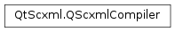

QScxmlCompiler¶
Synopsis¶
Detailed Description¶
The
PySide2.QtScxml.QScxmlCompilerclass is a compiler for SCXML files.Parses an SCXML file and dynamically instantiates a state machine for a successfully parsed SCXML file. If parsing fails, the new state machine cannot start. All errors are returned by
QScxmlStateMachine.parseErrors().To load an SCXML file,
QScxmlStateMachine.fromFileorQScxmlStateMachine.fromDatashould be used. UsingPySide2.QtScxml.QScxmlCompilerdirectly is only needed when the compiler needs to use a customQScxmlCompiler.Loader.
-
class
PySide2.QtScxml.QScxmlCompiler(xmlReader)¶ Parameters: xmlReader – PySide2.QtCore.QXmlStreamReaderCreates a new SCXML compiler for the specified
reader.
-
PySide2.QtScxml.QScxmlCompiler.compile()¶ Return type: PySide2.QtScxml.QScxmlStateMachineParses an SCXML file and creates a new state machine from it.
If parsing is successful, the returned state machine can be initialized and started. If parsing fails,
QScxmlStateMachine.parseErrors()can be used to retrieve a list of errors.
-
PySide2.QtScxml.QScxmlCompiler.errors()¶ Return type: Returns the list of parse errors.
-
PySide2.QtScxml.QScxmlCompiler.fileName()¶ Return type: unicode Returns the file name associated with the current input.
-
PySide2.QtScxml.QScxmlCompiler.loader()¶ Return type: PySide2.QtScxml.QScxmlCompiler::LoaderReturns the loader that is currently used to resolve and load URIs for the SCXML compiler.
-
PySide2.QtScxml.QScxmlCompiler.setFileName(fileName)¶ Parameters: fileName – unicode Sets the file name for the current input to
fileName.The file name is used for error reporting and for resolving relative path URIs.
-
PySide2.QtScxml.QScxmlCompiler.setLoader(newLoader)¶ Parameters: newLoader – PySide2.QtScxml.QScxmlCompiler::LoaderSets
newLoaderto be used for resolving and loading URIs for the SCXML compiler.
© 2018 The Qt Company Ltd. Documentation contributions included herein are the copyrights of their respective owners. The documentation provided herein is licensed under the terms of the GNU Free Documentation License version 1.3 as published by the Free Software Foundation. Qt and respective logos are trademarks of The Qt Company Ltd. in Finland and/or other countries worldwide. All other trademarks are property of their respective owners.